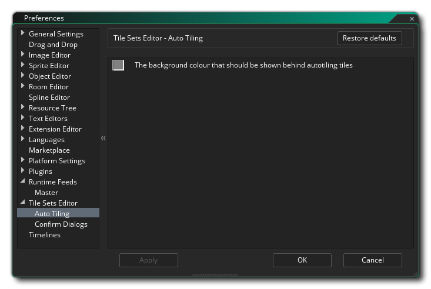
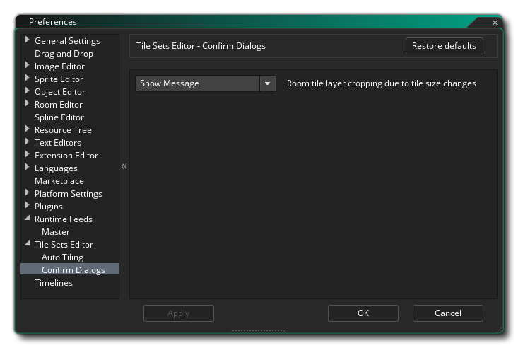

The Sprite Editor Preferences are used to define how the Tile Set Editor looks and functions. The following option exists for Auto Tiling:
The Tile Set Editor preferences also has a Confirm Dialogs sub-section: 
The option available here controls the message that pops up when you change the cell size of the tile set and this will affect how the room tilemap layers are rendered (resulting in cropped layers). By default you will be prompted to continue or cancel the operation, and this option lets you suppress this message by selecting "Okay" which will go ahead with the tile set cell change regardless of the impact on room tilemap layers. Default value is "Show Message".